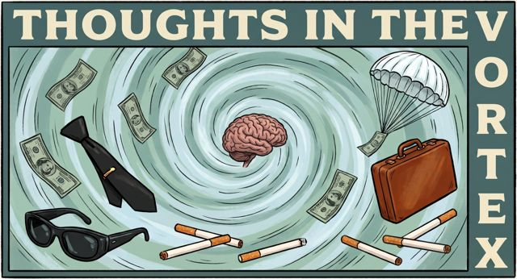

NORJAK · Northwest Orient Flight 305 · Wednesday, November 24, 1971
Flight 305 Timeline Wheel
The hijacking minute by minute, from the ticket counter in Portland to the FBI's first look inside the empty cabin at Reno. Every entry is built from the FBI Vault files: radio and teletype logs, FAA tapes and crew interviews. Point at or tap a mark to open the FBI page it comes from.
Who
Jump to
Pacific Standard Time—
Hover to magnify · scroll or drag to move along the day · ←→ step · click a mark to pin itSwipe the wheel and let go to open the entry under the gold line · tap a mark to open it · drag the strip below to cross the day
FBI page Open this Part in the FBI Vault ↗
Loading page…
Scan from the FBI Vault release. Scroll inside the page to read it.